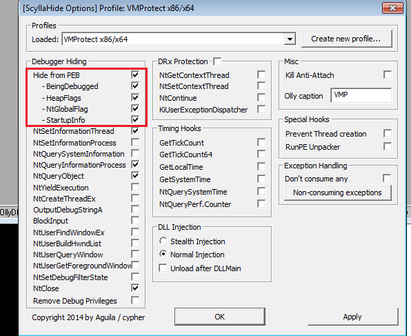
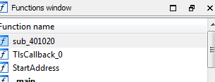
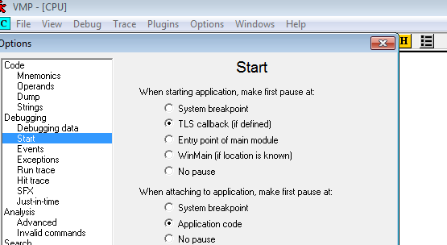
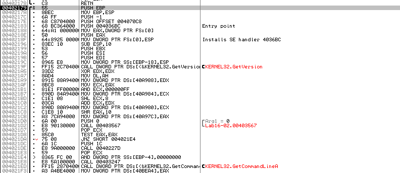
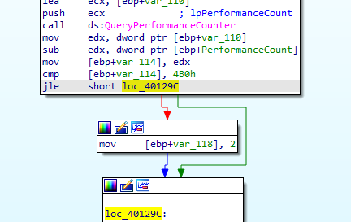
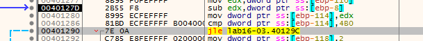
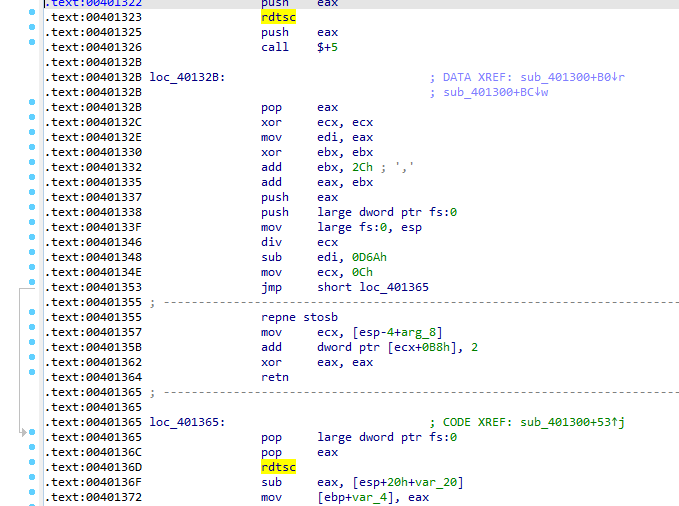

Practical Malware Analysis - Lab 16
This chapter’s labs focus on anti-debugging techniques
Lab 16-1
Analyze the malware found in Lab16-01.exe using a debugger. This is the same malware as Lab09-01.exe, with added anti-debugging techniques.
Q1: Which anti-debugging techniques does this malware employ?
Into IDA first, First check is check BeingDebugged in struct _PEB (PEB is in fs:30h and BeingDebugged is second parameter)
If it is debugged it will self destruct

Second check is ProcessHeap(+0x18h) in PEB in The ForceFlags(+0x10h from ProcessHeap) field but for XP

Third check is NTGlobalFlag in the PEB at offset 0x68. If the value at this location is 0x70, we know that we are running in a debugger

we notice the checks are in function routines also to be careful

Q2: What happens when each anti-debugging technique succeeds?
Self-delete
Q3: How can you get around these anti-debugging techniques?
using ScyllaHide https://github.com/x64dbg/ScyllaHide/releases
Or when debuggng force the jumps to the flow for all the instances of anti-debugging
Q4: How do you manually change the structures checked during runtime?
In OllyDbg
Using command
dump fs:[30] + 0xX
we go there then patch the byte :-> right-click -> binary -> Edit change to zero
Q5: Which OllyDbg plug-in will protect you from the anti-debugging techniques used by this malware?
ScyllaHide
Lab 16-2
Analyze the malware found in Lab16-02.exe using a debugger. The goal of this lab is to figure out the correct password. The malware does not drop a malicious payload.
1: What happens when you run Lab16-02.exe from the command line?
Needs a password
Q2: What happens when you run Lab16-02.exe and guess the command-line parameter?
Incorrect password, Try again.
3: What is the command-line password?
Running floss we find it is p@ss
but it doesn’t work
Q4: Load Lab16-02.exe into IDA Pro. Where in the main function is strncmp found?
Opening in ida we find this sneaky TLS call
where if it gets a handle to OllyDbg window via FindWindows it will exit

And there OutputDebugStringA after the previous check
the strncmp is in main, typing the offset Str2 gets Incorrect password so the thread created above with StartAddress function may alter the string
the StartAddress is a decoding routine with anti-debugging to change password if BeingDebugged is 1 in _PEB

Preparing our debugger with the TLS
We hit the TLS callback

Nulling the return of FindWindow

or using ScyllaHide Hooking FindWindow option and the BeingDebugged set to 0, and we get to entrypoint
Setting bp at 40123A the strncmp function

we see the password bzrrp@ss but it checks the first 4 chars so the password is bzrr

Q5: What happens when you load this malware into OllyDbg using the default settings?
just exits as tls callback is executed first
6: What is unique about the PE structure of Lab16-02.exe?
7: Where is the callback located? (Hint: Use CTRL-E in IDA Pro.)
4010610
Q8: Which anti-debugging technique is the program using to terminate immediately in the debugger and how can you avoid this check?
Q9: What is the command-line password you see in the debugger after you disable the anti-debugging technique?
10: Does the password found in the debugger work on the command line?
No, as StartAddress changes it if BeingDebugged
Q11: Which anti-debugging techniques account for the different passwords in the debugger and on the command line, and how can you protect against them?
OutputDebugStringA , TLS, BeingDebugged.
using ScyllaHide or manually force jump for no debugger branch and hook OutputDebugStringA .
Lab16-03
Analyze the malware in Lab16-03.exe using a debugger. This malware is similar to Lab09-02.exe, with certain modifications, including the introduction of anti-debugging techniques. If you get stuck, see Lab 9-2.
Q1: Which strings do you see when using static analysis on the binary?
Focusing only on anti-debugging strings, there is GetTickCount() so maybe this is Timing Check anti-debugging technique
and QueryPerformanceCounter import
and if there is a debugger maybe it will Self-delete
Q2: What happens when you run this binary?
nothing
Q3: How must you rename the sample in order for it to run properly?
ocl.exe
Q4: Which anti-debugging techniques does this malware employ?
QueryPerformanceCounter to check if time elapsed is high through single stepping or normal
GetTickCount, Same
Q5: For each technique, what does the malware do if it determines it is running in a debugger?
For QueryPerformanceCounter it does between the two calls an exception with division by zero with debugger attached if passed exception to user to decide if will pass to the program or debugger, it will take a lot of time
so if time taken is larger than 4B0h (1200) it will set var_118 to 2
this routine takes in the ocl.exe string, and does some encoding to it so the output changes as var_118 is used in the encoding
in the GetTickCount , it is enclosed between a function call 401000 , and if the time is larger than 1 then it moves edx to location 0 ? and ret (likely crash)
inside 401000 call, the call $+5 will push the next EIP into the stack and jump to plus 5 places, so 401006 will jump to 40100B, then puts the EIP into eax then into EDI
Notice here it will force a division by zero exception
with the exception handling being at memory 2Ch which is not possible as they are reserved for system (below 1000) so it will search next handling routine
The purpose for this just to make sure that no debugging happens as the exceptions will pass to the user to decide
to avoid all the above we can just pass the exception to the program in x32dbg
in the debugger in 4011E0 modifiy this as JMP so we avoid setting this var to 2 as we talked about
then we arrive to the encoding which changes the ocl.exe name we should set the executable name to
setting breakpoint outside the loop then running, we get the name we should set the executable to is peo.exe
So by setting breakpoint at 4015B7, we should arrive safely without the two anti-debugging mentioned above
now back to ida after 4015B7, we see 401300 call
in 401300 there is another anti-debugging using also timing check with rdtsc with a division by zero in between
In pseudo-code, it is better to understand here will do a time check between the exception(the exception doesn’t appear in the pseudo-code but in the assembly it is between them). and if the time elapsed (number of clock cycles) is more than 0x7A120 it will call 4010E0
call 4010E0 attempts to delete the exe
so in debugger we just set a breakpoint after 401300 call which does all this, and pass the exceptions to the debugee (but seems it fails so we have to patch JMP) , and we avoid all the anti-debugging used or patch the conditional jumps to JMP
Q6: Why are the anti-debugging techniques successful in this malware?
The anti-debugging timing checks are successful because the malware causes and catches an exception that it handles by manipulating the Structured Exception Handling (SEH) mechanism to include its own exception handler in between two calls to the timing checking functions. Exceptions are handled much more slowly in a debugger than outside a debugger.
Q7: What domain name does this malware use?
Patching all anti-debugging conditional jumps to absolute JMP we get the following edx:”adg.malwareanalsysisbook.com”